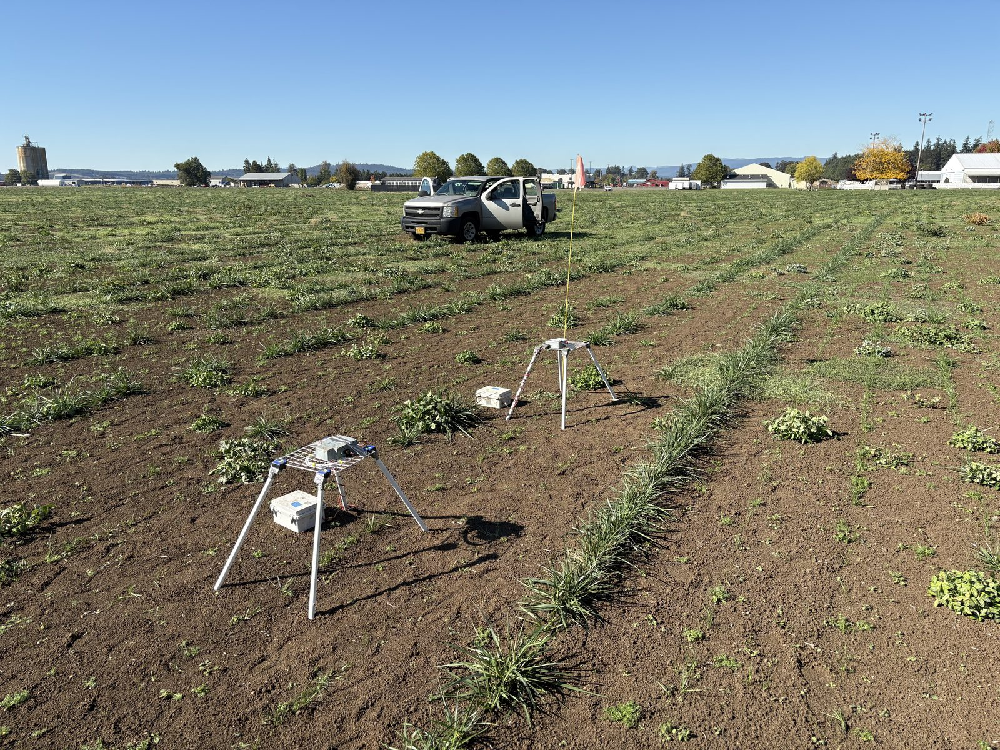

Slug monitoring in grass seed fields
48 semi-autonomous camera systems and 12 weather monitoring units built on Raspberry Pi 4, ESP32 and Pi Camera NoIR modules, with a one-week battery life, deployed in Willamette Valley grass seed fields. An optical-flow-based network detects slug movement, and I pair its predictions with the weather data to understand what drives slug emergence.